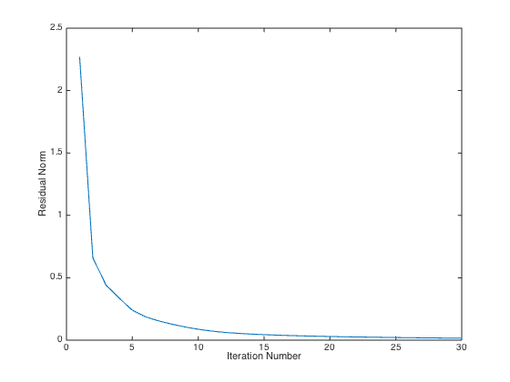

% Argyris Zymnis, Joelle Skaf, Stephen Boyd % % We are given a matrix A in R^{m*n} % and are interested in solving the problem: % % minimize ||A - Y*X||_F % subject to Y >= 0, X >= 0 % % where Y in R{m*k} and X in R{k*n}. % This script generates a random matrix A and obtains an % *approximate* solution to the above problem by first generating % a random initial guess for Y and the alternatively minimizing % over X and Y for a fixed number of iterations. % Generate data matrix A rstate = rand('state'); m = 10; n = 10; k = 5; A = rand(m,k)*rand(k,n); % Initialize Y randomly Y = rand(m,k); % Perform alternating minimization MAX_ITERS = 30; residual = zeros(1,MAX_ITERS); for iter = 1:MAX_ITERS cvx_begin quiet if mod(iter,2) == 1 variable X(k,n) X >= 0; else variable Y(m,k) Y >= 0; end minimize(norm(A - Y*X,'fro')); cvx_end fprintf(1,'Iteration %d, residual norm %g\n',iter,cvx_optval); residual(iter) = cvx_optval; end % Plot residuals plot(residual); xlabel('Iteration Number'); ylabel('Residual Norm'); % Display results disp( 'Original matrix:' ); disp( A ); disp( 'Left factor Y:' ); disp( Y ); disp( 'Right factor X:' ); disp( X ); disp( 'Residual A - Y * X:' ); disp( A - Y * X ); fprintf( 'Residual after %d iterations: %g\n', iter, cvx_optval );
Iteration 1, residual norm 2.26648
Iteration 2, residual norm 0.660781
Iteration 3, residual norm 0.44153
Iteration 4, residual norm 0.336907
Iteration 5, residual norm 0.239933
Iteration 6, residual norm 0.18738
Iteration 7, residual norm 0.154083
Iteration 8, residual norm 0.128125
Iteration 9, residual norm 0.10558
Iteration 10, residual norm 0.0872846
Iteration 11, residual norm 0.0730054
Iteration 12, residual norm 0.0623666
Iteration 13, residual norm 0.0546671
Iteration 14, residual norm 0.0488472
Iteration 15, residual norm 0.0440959
Iteration 16, residual norm 0.040119
Iteration 17, residual norm 0.0367989
Iteration 18, residual norm 0.0339624
Iteration 19, residual norm 0.0315186
Iteration 20, residual norm 0.0293616
Iteration 21, residual norm 0.0274349
Iteration 22, residual norm 0.0256886
Iteration 23, residual norm 0.0240904
Iteration 24, residual norm 0.0226158
Iteration 25, residual norm 0.021246
Iteration 26, residual norm 0.0199695
Iteration 27, residual norm 0.0187749
Iteration 28, residual norm 0.0176563
Iteration 29, residual norm 0.0166057
Iteration 30, residual norm 0.0156197
Original matrix:
Columns 1 through 7
0.7853 1.1043 0.5464 0.8821 0.9633 0.9120 0.8624
1.6281 2.2127 1.1835 1.7593 1.9218 1.8189 1.6919
0.9260 1.3156 0.6115 1.0933 1.2980 1.1348 1.1092
1.1830 1.9762 1.1304 1.4130 1.4772 1.5964 1.1147
1.2148 1.6831 0.9346 1.3715 1.5540 1.4853 1.2150
0.7934 1.7606 0.8839 1.0301 1.1985 1.0598 1.1130
1.0306 1.4870 0.6897 1.1861 1.4357 1.1857 1.2986
0.9363 1.9364 0.9074 1.3523 1.5164 1.5405 1.1609
1.0981 1.6368 0.8873 1.3303 1.5322 1.4920 1.1132
1.0697 1.8210 1.0921 1.3177 1.5436 1.5176 1.0405
Columns 8 through 10
0.9490 0.4810 0.6907
1.9100 1.1375 1.3869
1.1896 0.7200 0.7121
1.6666 1.1085 1.1592
1.4924 1.1380 0.9382
1.5280 0.7139 0.9701
1.3526 0.7723 0.8165
1.6706 0.8763 0.9997
1.4644 1.1687 0.8353
1.6373 1.4800 0.8682
Left factor Y:
1.0e+03 *
0.0012 0.0004 0.0002 0.0000 0.0006
0.0023 0.0010 0.0005 0.4445 0.0008
0.0018 0.0000 0.0003 0.8346 0.0011
0.0000 0.0010 0.0007 0.0433 0.0001
0.0014 0.0003 0.0006 1.0572 0.0005
0.0001 0.0011 0.0000 1.8709 0.0009
0.0022 0.0002 0.0002 1.5105 0.0013
0.0000 0.0004 0.0004 0.0000 0.0013
0.0010 0.0000 0.0007 1.0500 0.0007
0.0001 0.0003 0.0008 2.5220 0.0002
Right factor X:
Columns 1 through 7
0.1985 0.0000 0.0102 0.1099 0.1233 0.0609 0.1704
0.4760 0.8742 0.4933 0.5116 0.4927 0.5123 0.5156
0.9951 1.4881 0.8889 1.2413 1.3420 1.4987 0.7934
0.0000 0.0001 0.0001 0.0000 0.0001 -0.0000 0.0000
0.2530 0.7519 0.2608 0.4876 0.5890 0.5468 0.4872
Columns 8 through 10
0.0096 0.0259 0.0648
0.7050 0.2525 0.6075
1.2956 1.2146 0.7529
0.0001 0.0001 0.0000
0.6603 0.2002 0.3440
Residual A - Y * X:
Columns 1 through 7
0.0011 -0.0005 -0.0015 0.0042 -0.0019 0.0095 -0.0059
-0.0002 -0.0003 0.0000 -0.0003 -0.0001 0.0003 0.0002
-0.0000 -0.0001 0.0000 -0.0000 -0.0000 0.0000 0.0000
-0.0002 -0.0002 -0.0001 -0.0005 -0.0002 0.0005 0.0003
0.0000 -0.0000 0.0000 0.0001 0.0000 -0.0001 -0.0001
0.0001 0.0008 -0.0001 0.0004 0.0003 -0.0020 0.0005
0.0001 0.0001 0.0001 0.0004 0.0001 -0.0004 -0.0003
-0.0004 0.0000 -0.0001 -0.0007 -0.0005 0.0014 -0.0001
-0.0000 -0.0000 -0.0000 -0.0000 -0.0000 0.0000 0.0000
0.0004 0.0005 0.0001 0.0010 0.0003 -0.0010 -0.0007
Columns 8 through 10
-0.0037 -0.0074 0.0035
0.0001 0.0001 0.0002
0.0000 0.0000 0.0000
-0.0000 0.0001 0.0003
0.0001 -0.0000 -0.0000
0.0004 -0.0009 -0.0004
0.0001 -0.0001 -0.0002
-0.0003 -0.0001 0.0006
-0.0000 0.0000 0.0000
-0.0001 -0.0003 -0.0006
Residual after 30 iterations: 0.0156197
